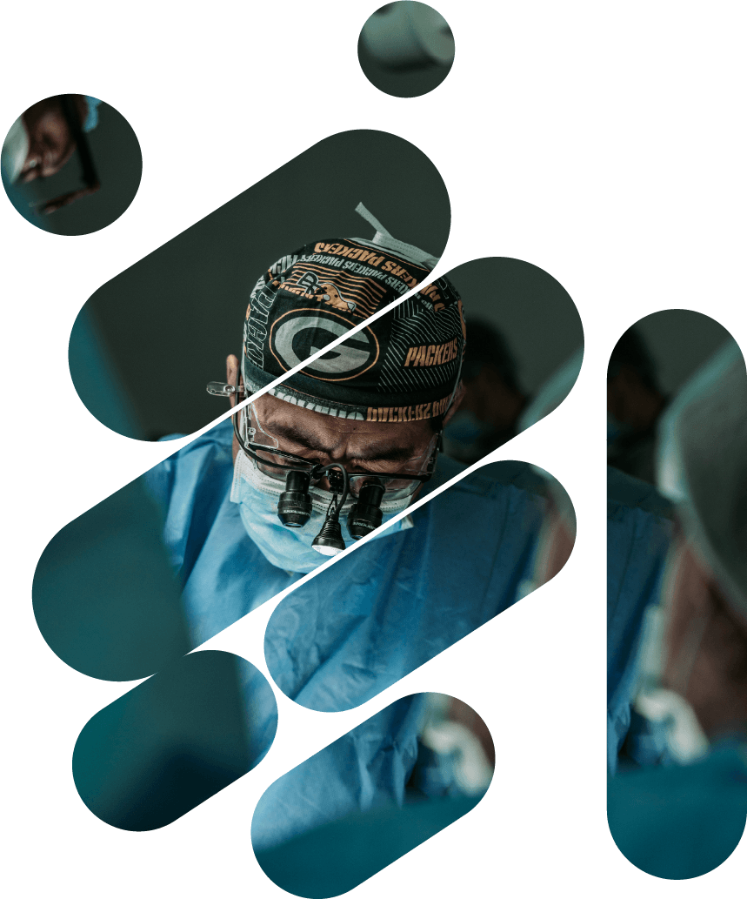
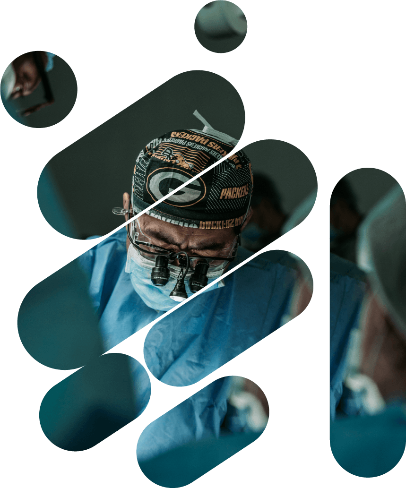
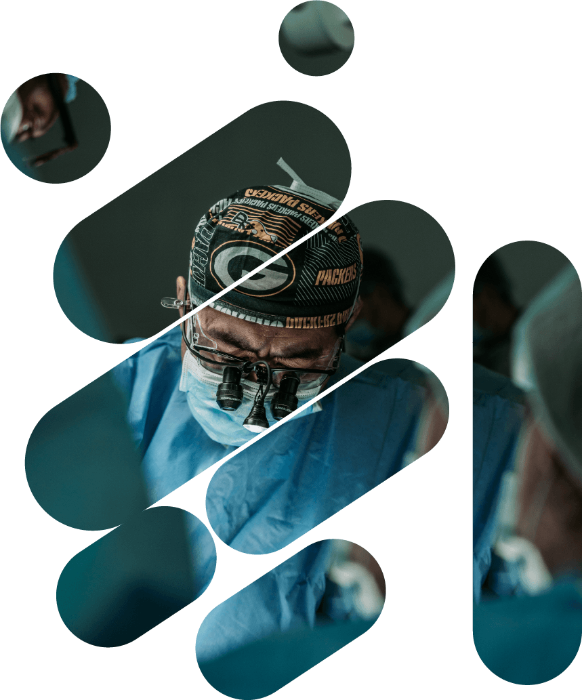
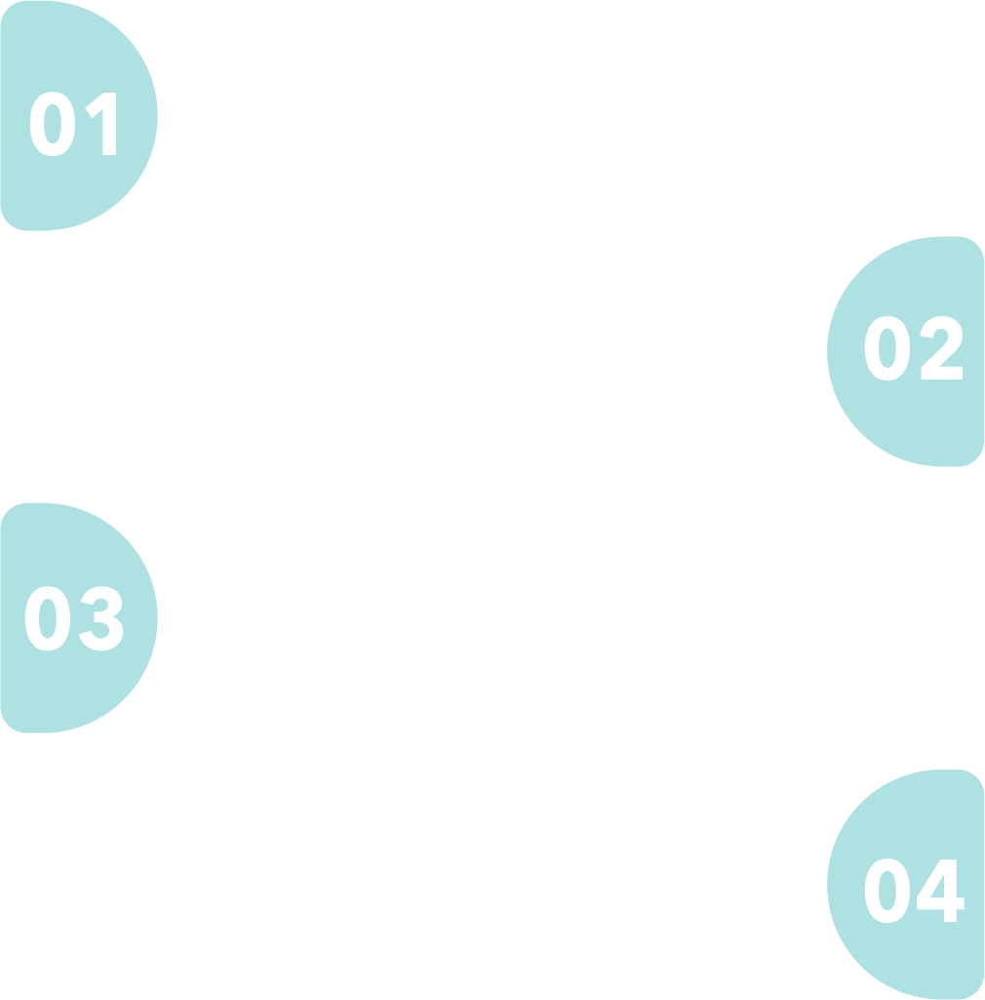

Campaña Tecnologica para el Cuidado de Equipos Biomédicos,
impulsada por:
 

Tecnología Biomédica: “Tu Salud en Tus Manos,Tu Responsabilidad."
Video de la semana
Campaña Tecnologica para el Cuidado de Equipos Biomédicos,
impulsada por:

¿Por qué es importante el cuidado de los equipos biomédicos?
Optimiza el funcionamiento de los equipos
Prolonga la vida útil de los equipos
Garantiza la seguridad de los pacientes
Objetivos de la Campaña
General
Garantizar el óptimo funcionamiento de los equipos biomédicos para asegurar su eficacia y confiabilidad en el diagnóstico y tratamiento médico, contribuyendo así a la mejora de la atención y seguridad de los pacientes.
Garantizar el óptimo funcionamiento de los equipos biomédicos para asegurar su eficacia y confiabilidad en el diagnóstico y tratamiento médico, contribuyendo así a la mejora de la atención y seguridad de los pacientes.
Especificos
Reducir incidentes y eventos adversos relacionados con pacientes y equipos biomédicos.
Minimizar la necesidad de mantenimientos correctivos y evitar daños por uso inadecuado.
Mejorar la disponibilidad y funcionamiento de los equipos biomédicos.
Evitar que equipos queden fuera de servicio.
General
Reducción de incidentes
Menos reparaciones y daños
Mayor disponibilidad de equipos = mayor capacidad de atención
Evitar fuera de servicio
Consejos para el uso y el cuidado de dispositivos biomédicos
Cronograma
Se parte del cambio